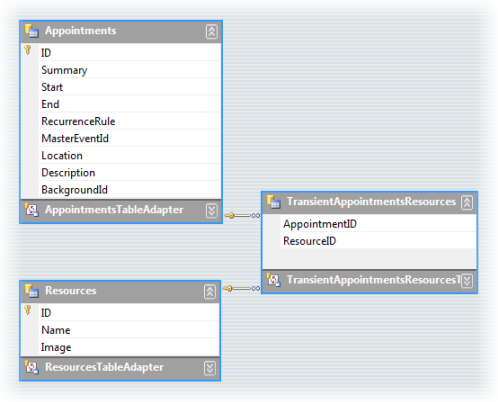

Using DataSource property
RadScheduler's DataSource property lets you bind to objects that inherit the base abstract SchedulerDataSource class. The SchedulerBindingDataSource implementation of SchedulerdataSource binds traditional data stores like lists of business objects and database tables. You can find the SchedulerBindingDataSource component in the Toolbox.
The SchedulerBindingDataSource class has two properties: EventProvider and ResourceProvider that correspond to the provider instances of type EventBindingProvider and ResourceBindingProvider. The EventBindingProvider class is used to handle CRUD operations against an events data store, while ResourceBindingProvider class is used to handle the same against a resources data store. Both provider implementations are nested types to the SchedulerBindingDataSource class and are public. Also the base abstract class for binding providers - the BindingProviderBase
An integral and vital part of the providers logic is the Mapping property that requires instance implementing IMappingInfo interface. The IMappingInfo handles the property mappings. Property names from the data store are mapped to corresponding property names of the classes that RadScheduler uses to operate internally. For example a database field name from the table that handles the appointments information is mapped to the corresponding property of a object representing appointment inside the scheduler.
To have the data source make any sense to the SchedulerBindingDataSource you also need to define mappings that link the expected information to columns in a database table or business object. There are two mapping objects that need to be loaded up and assigned, the AppointmentMappingInfo and ResourceMappingInfo. AppointmentMappingInfo has a series of string properties that point to all appointment related data such as start date/time, end date/time, a description, etc. The ResourcesMappingInfo object has a Name and Image.
Here's a dataset design view for the SchedulerData.mdf database file that ships with Telerik UI for WinForms. You can see all the fields that can be defined for appointments and resources. Also notice a "join table" named "TransientAppointmentsResources" that assigns a particular resource to an appointment.
Notice that while the database structure allows for multiple resources, the built-in scheduler dialog only allows a single resource to be selected at a time.
The foreign key relationship between "TransientAppointmentsResources" and the "Appointments" table will also be defined in the AppointmentMappingInfo object.
You can find SchedulerData.mdb (Access) in the installation directory under \Examples\QuickStart\DataSources.
You can find SchedulerData.mdf (MS SQL database file)
here
Here's some example code that demonstrates loading the AppointmentMappingInfo fields with column names in a database table. The Resources property is assigned the name of the foreign key that joins the Appointments and the "join table' that sits between the appointments and resources table. The ResourceID property is assigned to the column in the "join table" of a unique resource identifier.
RadScheduler works from a provider model so that in the future, custom appointment and resource providers can be plugged in to replace the built-in providers. The AppointmentMappingInfo is assigned to the Mapping property of the schedulers datasource event provider. Review the code below to see how this is done when binding to a database tables.
The Exceptions and Resources properties in the AppointmentMappingInfo should be set to the names of the relations that are represented in the dataset.
[C#]
AppointmentMappingInfo appointmentMappingInfo = new AppointmentMappingInfo();
appointmentMappingInfo.Start = "Start";
appointmentMappingInfo.End = "End";
appointmentMappingInfo.Summary = "Summary";
appointmentMappingInfo.Description = "Description";
appointmentMappingInfo.Location = "Location";
appointmentMappingInfo.BackgroundId = "BackgroundID";
appointmentMappingInfo.StatusId = "StatusID";
appointmentMappingInfo.RecurrenceRule = "RecurrenceRule";
appointmentMappingInfo.Resources = "Appointments_AppointmentsResources";
appointmentMappingInfo.ResourceId = "ResourceID";
appointmentMappingInfo.Exceptions = "Appointments_Appointments";
appointmentMappingInfo.MasterEventId = "ParentID";
schedulerBindingDataSource1.EventProvider.Mapping = appointmentMappingInfo;
[VB.NET]
Dim appointmentMappingInfo As New AppointmentMappingInfo()
appointmentMappingInfo.Start = "Start"
appointmentMappingInfo.End = "End"
appointmentMappingInfo.Summary = "Summary"
appointmentMappingInfo.Description = "Description"
appointmentMappingInfo.Location = "Location"
appointmentMappingInfo.BackgroundId = "BackgroundID"
appointmentMappingInfo.StatusId = "StatusID"
appointmentMappingInfo.RecurrenceRule = "RecurrenceRule"
appointmentMappingInfo.Resources = "Appointments_AppointmentsResources"
appointmentMappingInfo.ResourceId = "ResourceID"
appointmentMappingInfo.Exceptions = "Appointments_Appointments"
appointmentMappingInfo.MasterEventId = "ParentID"
SchedulerBindingDataSource1.EventProvider.Mapping = appointmentMappingInfo
The resource mapping has fewer columns and doesn't need any information about joining to the appointments table.
[C#]
ResourceMappingInfo resourceMappingInfo = new ResourceMappingInfo();
resourceMappingInfo.Id = "ID";
resourceMappingInfo.Name = "ResourceName";
schedulerBindingDataSource1.ResourceProvider.Mapping = resourceMappingInfo;
schedulerBindingDataSource1.EventProvider.DataSource = this.schedulerDataDataSet.Appointments;
schedulerBindingDataSource1.ResourceProvider.DataSource = this.schedulerDataDataSet.Resources;
[VB.NET]
Dim resourceMappingInfo As New ResourceMappingInfo()
resourceMappingInfo.Id = "ID"
resourceMappingInfo.Name = "ResourceName"
SchedulerBindingDataSource1.ResourceProvider.Mapping = resourceMappingInfo
SchedulerBindingDataSource1.EventProvider.DataSource = Me.schedulerDataDataSet.Appointments
SchedulerBindingDataSource1.ResourceProvider.DataSource = Me.schedulerDataDataSet.Resources